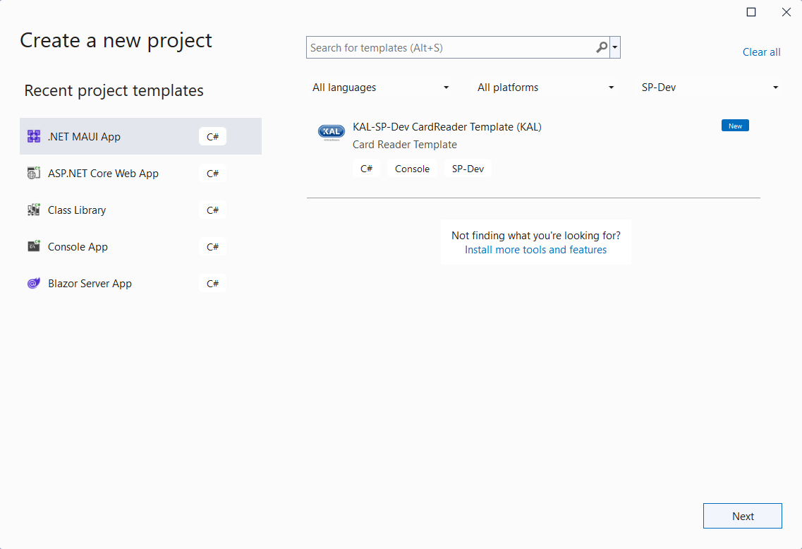

Device Templates
The SP-Dev-Framework provides dotnet project templates which can be used as a starting point for creating an XFS4 Service Provider. These templates are supplied as a NuGet package, which once installed will allow the project templates to be available from the dotnet command line and through IDEs such as Visual Studio.
Installing the templates
- Install .Net 6 SDK or Visual Studio 2022.
- Run
dotnet new --install KAL.XFS4IoT.SP-Dev.Framework.Templatesto install the SP-Dev project templates.
The templates will now be available from Visual Studio 2022 and through the .Net CLI.
Using the templates in Visual Studio
After installing the templates, they will now be visible in the VisualStudio "Create a new project" UI.

Using the templates from .Net CLI.
The following command can be used to create a new CardReader project:
dotnet new spdev-cr
By default it will use the current directory name as the project name, and create the project files in the current directory. See here for more information on using the dotnet new command.
Uninstalling the templates
- Run
dotnet new --uninstall KAL.XFS4IoT.SP-Dev.Framework.Templatesto remove the templates.